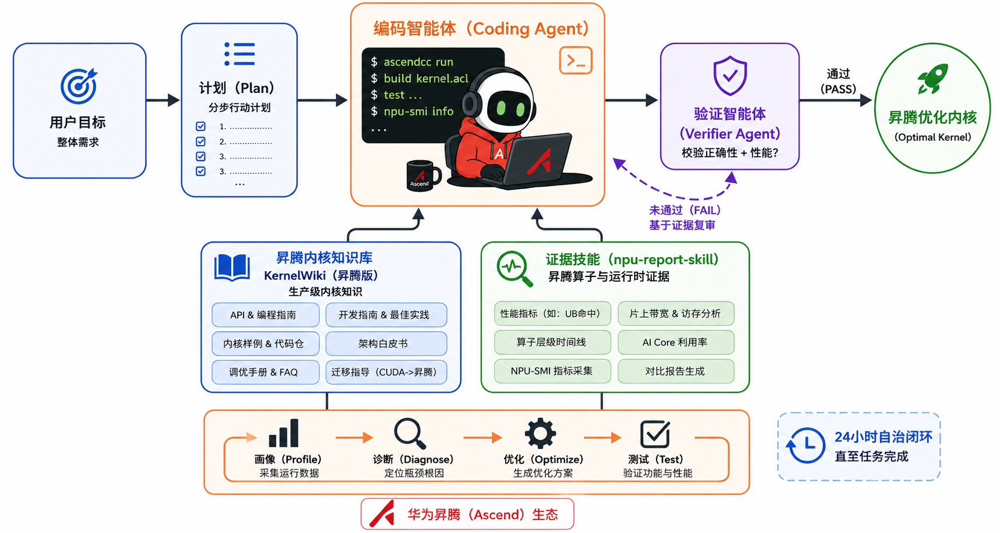
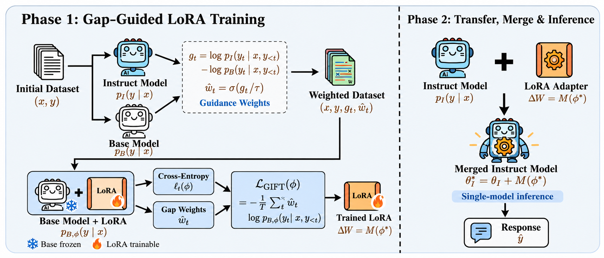

PERSONAL HOMEPAGE
Guanquan Zhu （朱冠全）
你好，很高兴在这里认识你！
我目前在复旦大学未来信息创新学院 攻读电子信息硕士 学位。此前在香港中文大学（深圳） 、深圳市大数据研究院 担任研究助理（RA），导师是王阿康博士 （数据科学学院）。
欢迎计算机科学各方向的交流与合作。
精选 AI 系统项目 SELECTED PROJECTS

昇腾算子优化 Agent 架构
展开项目详情
项目背景： 作为核心研发，参与深圳河套学院联合华为、智子芯元开展的 DeepSeek-V4-Pro 国产算力全参数后训练。围绕 DeepSeek-V4 在国产算力上的推理与后训练落地，负责昇腾 910C 部署测评、算子优化 Agent 研发及融合反向算子优化。
910C 推理适配与测评（DeepSeek V4 Flash/Pro）： 参与在昇腾 910C 集群部署与测评 DeepSeek V4 Flash/Pro，基于 ShareGPT 等数据对比 vLLM Ascend 与 SGLang 的 Prefill/Decode 性能，为推理框架选型与部署配置提供依据。算子优化 Agent（昇腾迁移与开源）： 针对昇腾算子依赖人工分析与反复试错的问题，基于 MIT Kernel Design Agents 重构适配 910B/910C 的算子知识库、优化规则与性能诊断工具，打通检索→生成→编译→精度/性能验证→保留/回退闭环，开源 Kernel-Agent-Ascend。融合反向算子优化（耗时降低 20.9%）： 基于 msprof 定位 AIV 侧标量地址计算、稀疏访存、同步等待与负载不均；通过地址计算化简、低命中搬运分支裁剪、冗余同步删除、分块/片上缓存优化及向量任务重分配，同时修复缓存扩容引发的尾块越界，算子耗时 22.603→17.88 ms（1.26×），四路输出余弦相似度均为 1.0。
核心成果： 目标配置（BSND/BF16，B=1、S=4096、K=1024）下，融合反向算子耗时 22.603→17.88 ms，降低 20.9%（1.26×）；四路输出余弦相似度均为 1.0，最大相对误差 8.39e-4。
展开项目详情
项目背景： 针对大语言模型部署后，不同推理服务在并发处理能力、响应延迟和吞吐性能方面存在差异，以及传统命令行压测配置复杂、测试结果分散、缺少统一评测入口等问题，基于 GuideLLM 与 LLMPerf 构建 Web 可视化性能评测平台。用户通过网页提交模型服务地址及端口、测试参数和负载配置，即可自动完成性能测试、指标统计与结果展示，为大模型在线部署和服务容量规划提供数据支持。
多端服务接入与 Web 测试任务管理： 构建可视化 Benchmark 任务管理流程，支持通过网站提交符合 OpenAI API 规范的模型推理服务地址，兼容自定义服务及中转站接口，实现推理服务接入、测试数据集生成、任务提交与执行状态管理。多负载模型配置与自动化性能测试： 集成 LLMPerf 和 GuideLLM 测试能力，支持固定 Token 长度测试及可配置的负载 Profile。通过 Sweep 模式自动执行同步基线、极限吞吐和多档固定到达率扫描，采集 TTFT、TPOT、请求吞吐、输出 Token 吞吐、并发数及错误数等指标，实现不同负载条件下的性能评估。性能指标分析与可视化排行榜： 构建测试结果统计与展示模块，支持任务列表、模型性能排行榜及 JSON、HTML 等格式的结果查看。结合 P99 延迟和请求失败数等 SLA 约束，对不同负载档位进行筛选，识别满足服务质量要求的高吞吐工作点。
核心成果： 实现从 Web 端提交测试任务、自动化执行压测到性能指标统计及排行榜展示的完整评测流程，支持多端模型服务接入和负载 Profile 自定义配置。以 Qwen3-32B-W8A8 模型为例，在输入、输出均为 512 Token 的测试条件下，采用 Sweep 多档负载扫描，在满足 P99 TTFT ≤ 2000 ms、P99 TPOT ≤ 100 ms 及零失败请求的约束下，筛选出并发约 15、请求到达率约 1.5 req/s、输出吞吐约 401 tok/s 的推荐工作点，为推理服务负载配置与容量规划提供量化依据。

双模型相对置信度引导训练 → 参数迁移与合并 → 单模型推理
展开项目详情
项目背景： 针对大语言模型领域微调过程中通用能力退化、低置信度 token 干扰训练以及监督信号利用不充分等问题，基于 GIFT 框架，研究双模型相对置信度引导的动态损失加权与跨模型参数迁移方法，提升模型的任务适配能力。
基线复现与评测框架搭建： 基于 Qwen、Llama 系列模型复现 GIFT 的教师引导、LoRA 参数高效微调及 Base-to-Instruct 参数迁移流程，搭建涵盖数据预处理、模型训练、参数合并和 Benchmark 评测的完整实验框架。双模型相对置信度引导机制设计： 提出 DARC-FT 方法，利用 Base Model 与 Instruct Model 对目标 token 的对数概率差衡量相对置信度，通过 Sigmoid 函数与温度参数构建 token 级动态权重，对交叉熵损失进行自适应加权，引导模型重点学习 Instruct 相对 Base 具有更高预测置信度的训练信号。跨模型参数迁移与消融实验： 在冻结 Base 主干参数的条件下训练 LoRA，将学习得到的参数更新合并至 Instruct，实现单模型推理；设计 SFT+Merge、GIFT-BaseT、GIFT 等对照实验，结合数学推理、医疗问答及通用能力评测，分析相对置信度加权机制的有效性与跨领域适用性。
核心成果： 完成 DARC-FT 方法设计与工程实现，构建双模型置信度计算、动态加权训练、LoRA 参数迁移及单模型推理的完整流程；现有数学任务实验结果提供了初步有效性证据，同时发现医疗任务中仍存在性能局限，为后续置信度约束优化及跨领域泛化研究提供实验依据。
教育与研究经历 EXPERIENCE
复旦大学 中国 · 上海 2026 年 9 月 – 2029 年 6 月 （预计）
未来信息创新学院 · 电子信息硕士
香港大学 中国 · 香港 2026 年 7 月
暑期学校学员
深圳市大数据研究院（SRIBD） 中国 · 深圳 2026 年 3 月 – 2026 年 6 月
算法实习生
从事 AI 基础设施、加速器算子优化与大语言模型推理基准测试及压力测试。
香港大学 / 澳门大学 中国 · 香港 / 澳门 2023 年 11 月
跨学科项目组长
GPA：97.50/100.00 · 获胜团队杰出表现嘉奖信
荣誉与奖励 HONORS & AWARDS
2025 年 12 月 2025 年 9 月 中国国际大学生创新大赛 · 国家银奖、广东省金奖
中华人民共和国教育部 2025 年 5 月 2024 年 12 月 2024 年 12 月 全国大学生数学建模竞赛 · 广东省一等奖
广东省教育厅 2024 年 11 月 第九届全国密码技术竞赛 · 全国三等奖
中国密码学会 2024 年 8 月 第九届全国高校密码数学挑战赛 · 全国三等奖、中南赛区一等奖
中国密码学会 · 广东省仅两支队伍获此奖项 2024 年 7 月 第十届全国大学生统计建模大赛 · 广东赛区一等奖
中国统计教育学会
技术能力 TECHNICAL SKILLS
大语言模型后训练与 Agent Qwen3、Transformer、SFT、DPO/RPO、LoRA、Tool Calling、模型外记忆、多轮上下文编排与 Agent 评测
检索与模型服务 Embedding、Reranker、BM25 / 向量混合检索、RRF、Cross-Encoder、vLLM 与 SGLang
AI 基础设施 CUDA、昇腾 910B/910C、msprof 性能分析、推理基准测试与算子优化
工程开发 Python、C、PyTorch、Hugging Face、MS-SWIFT、FastAPI、SQLite、Docker、Git、Vue 3 与 Linux
AI 辅助开发 日常高频使用 Codex 与 Claude Code，月度 Token 使用量达亿级。
文档与媒体 LaTeX、Markdown、MS Office / Visio、Adobe
学习之外 BEYOND WORK
学习是世界上最幸福的事情之一。
也喜欢在电影、音乐和摄影里发现生活，在运动、徒步与烹饪中享受日常。